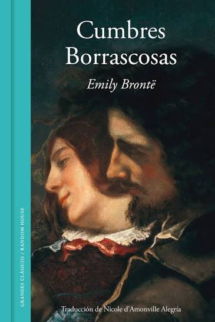

|
 |
Cumbres borrascosaspor Emily Brontë SINOPSISCumbres borrascosas es la más turbadora y extraordinaria novela de amor que jamás se haya escrito. Envuelta desde sus inicios por un halo de misterio, narra la devastadora pasión entre Heathcliff y Catalina, víctimas y demiurgos de una relación casi demoníaca iniciada en la infancia, que se prolongará durante el matrimonio de Catalina con otro hombre, para culminar más allá de la muerte. El odio, el amor, la voluptuosidad de la venganza -presentados mediante una modélica estrategia de las voces narrativas- se expresan a través de la naturaleza que, con su fuerza irresistible, marca también el destino de los protagonistas. Como dijo Virginia Woolf, "la capacidad de Emily Brontë es la más insólita entre cuantas quepa imaginar. Era capaz de liberar la vida de su dependencia de los hechos, revelar con muy pocas palabras el espíritu de una cara, de modo que dejara de necesitar el cuerpo, y con sólo hablar del páramo hacer que el viento soplara y rugiera el trueno". |
9/10
Romance, Gótico, Clásico